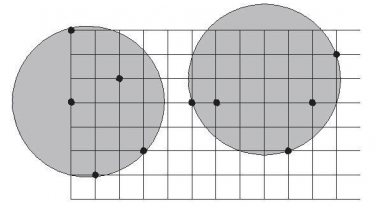
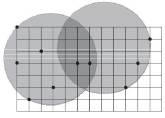

给定平面上 $n$ 个点 $(x_1,y_1),...,(x_n,y_n)$，找出 $2$ 个半径相同的圆 $R_1$ 和 $R_2$，覆盖给定的 $n$ 个点，且半径最小。


设计一个算法，计算出所求最小覆盖双圆 $R_1$ 和 $R_2$ 的半径。
输入有多个测试实例。每个实例的第 $1$ 行中给出正整数 $n$，$n＜1000$，表示平面上有 $n$ 个点。
接下来的 $n$ 行中每行给出 $2$ 个实数 $(x,y)$，$-100000≤x≤100000$，$-100000≤y≤100000$。
最后一行有一个 $0$ 表示结束。
对于每组数据，输出最小的符合题意的圆的半径，保留两位小数。
3 0.00 0.00 1.00 0.00 0.00 4.00 10 0.00 0.00 0.00 3.00 1.00 6.00 2.00 2.00 3.00 5.00 5.00 3.00 6.00 3.00 9.00 5.00 10.00 5.00 11.00 3.00 0
0.50 3.05
对于 100% 的数据，$n \le 1000，|x_i|,|y_i| \le 100000$，（$T \le 10$）
 Comet OJ
Comet OJ